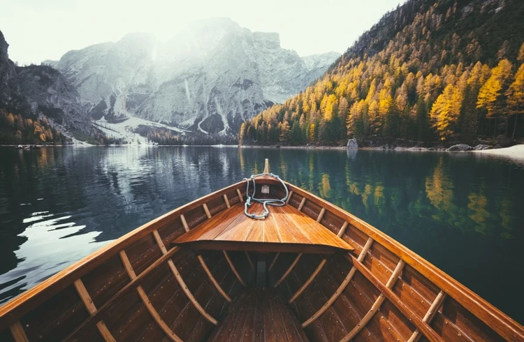
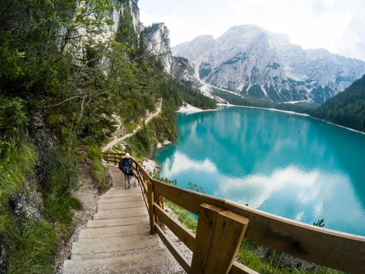

Lago di Braies. Alquila un bote Esto hace que sea una gran experiencia y te da un punto de vista diferente. Es bastante caro, pero vale la pena pagarlo. Ve por la mañana temprano, al amanecer. Tendrás la mayor parte del lago para ti solo y es más probable que también haya reflejos de las montañas. Es realmente un momento mágico del día para visitar un lugar como este. Aparte de eso, lleva algunos bocadillos y buenos zapatos para caminar + una botella de agua reutilizable con un filtro.

Senderismo, Muchos de los visitantes vienen aquí a caminar alrededor del lago, lo cual se recomienda. Es una hermosa caminata que se tarda entre 1,5 y 2 horas en terminar. Es adecuado para la mayoría de las edades siempre y cuando se tenga un nivel decente de condición física. Durante la caminata, podrás disfrutar de algunas de las mejores vistas. Y si te sientes aventurero, también puedes subir a la montaña sobre el lago, la Croda del Becco (Seekofel).